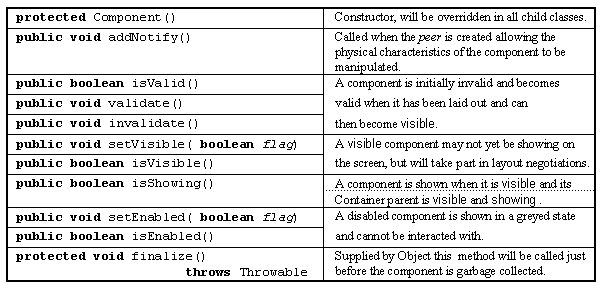
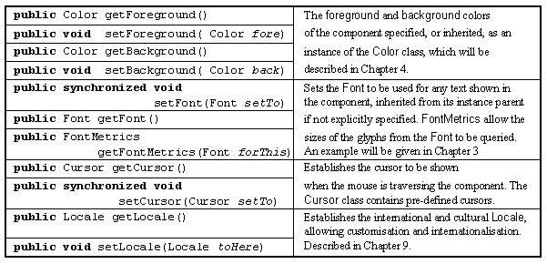
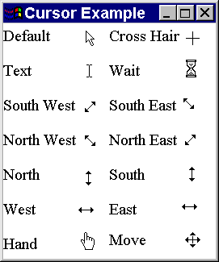
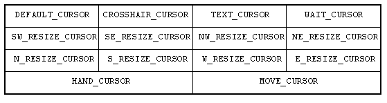
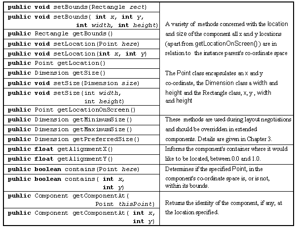
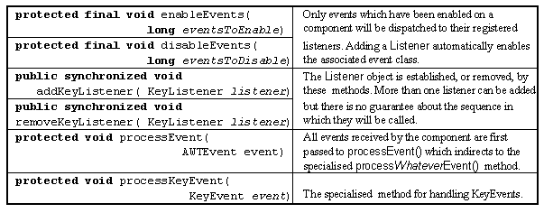
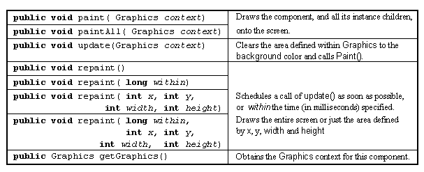
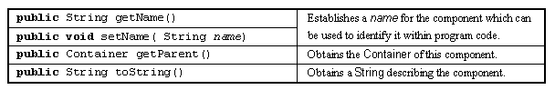

The Component class is the root class for almost all the interface components in the AWT. It is a complex class containing more than 20 data attributes and 130 methods, all of which are inherited by all the classes below it in the class hierarchy shown in Figure 2.2. This may seem an intimidating amount of detail to have to assimilate, however the attributes can be grouped according to the functionality which they provide and, in practice, only a small proportion of them need be used. As the Component class is so complex many of the classes derived from it are comparatively simple as they inherit much of their functionality from Component.
Only an initial introduction to the major resources of the class, involving grouping and naming of various methods with a brief indication of their function, will be given here. Additional details of some, but not all, of the remaining attributes and methods will be given throughout the rest of this chapter and the book. The first group of methods to be considered are those concerned with the lifecyle of a component and are listed in Table 2.2.

Table 2.2 Lifecycle resources of the Component
class.
A Component once
constructed will create its peer in the native windowing
environment, calling the addNotify()
method once it is created and then waits to become validated during layout negotiations at which
time it becomes visible but
will only be shown when its
instance parents are shown. The next group of methods, shown in
Table 2.3, are concerned with the Component's
physical appearance.

Table 2.3 Physical appearance resources of the Component class.
The foreground, background and font resources will be described in the next Chapter and the locale resource in Chapter 9. The following init() method of a class called CursorExample creates 14 instances of the Label class, each bearing a text label describing the Cursor associated with it, and installs them within a 2 column by 7 row GridLayout layout policy.
0014 public void init() {
0015
0016 int maxCursors = Cursor.MOVE_CURSOR +1;
0017
0019 Label cursorLabels[] = new Label[ maxCursors];
0020 String cursorNames[] = { "Default", "Cross Hair", "Text",
0021 "Wait", "South West", "South East",
0022 "North West", "North East", "North",
0023 "South", "West", "East",
0024 "Hand", "Move"};
0025
0029 this.setLayout( new GridLayout( 7, 2, 0, 10));
0030
0031 for ( int index =0; index < maxCursors; index++ ) {
0032 cursorLabels[ index] = new Label( cursorNames[ index]);
0033 cursorLabels[ index].setCursor( new Cursor( index));
0034 this.add( cursorLabels[ index]);
0035 } // End for.
0036 } // End init.
The Cursor class declares fourteen class wide manifest constants identifying all the cursor images which it supplies. The last of these manifest values is MOVE_CURSOR and, on line 0016, this value is used to initialize the value of the local int variable MaxCursors. This value is then used on line 0019 to define the size of an array of Label instances called cursorLabels. Lines 0020 to 0024 then declares and initializes an array of Strings called cursorNames. The steps of the init() method commence with the establishment of a 7 by 2 GridLayout policy for the applet. The loop between lines 0031 and 0035 constructs each Label in turn specifying a String from the cursorNames array as an argument to its constructor. Before the Label is added to the applet, on line 0034, its setCursor() method is called specifying a new Cursor instance whose argument identifies in turn each possible cursor.
Figure 2.4 illustrates the appearance of this applet, as the mouse pointer moves into each Label the appearance of the cursor will change to that shown alongside its name. Table 2.4 lists the manifest names of the fourteen cursors supplied by the Cursor class, unfortunately there is no mechanism for preparing a cursor from a developer supplied image.

Figure 2.4 The 14 Java cursors under Windows '95.

Table 2.4 The manifest cursor names supplied by the Cursor class.
Table 2.5 contains the methods associated with the Component's size and location.

Table 2.5 Size and location resources of the Component class.
Table 2.6 contains the methods associated with events. Only the details of the KeyEvent class are shown. There are a similar set of methods for the ComponentEvent, InputEvent and MouseEvent classes. Further details of these, and other event classes, such as the ActionEvent introduced in Chapter 1, will be given throughout the rest of this chapter.

Table 2.6 Event handling resources of the Component class.
The usual technique for handling events is to register a Listener object with the Component using the appropriate addWhateverListener() method, for example addActionListener(). This will automatically enable the appropriate class of events on the Component and dispatch them to the actionPerformed(), or equivalent, method of the Listener. However when components are extended, as opposed to simply being used, the appropriate event classes will have to be explicitly enabled, using enableEvent(). Events generated by the Component will then be passed to the it's processEvent() method which, unless overridden, will indirect to the appropriate processWhateverEvent() method. Introductory examples of extending components will be given later in this chapter and more extensive examples in Chapter 3.
The next table, Table 2.7, lists the methods associated with painting a component. The paint() method is actually responsible for drawing the component onto the screen, but should never be called directly. Instead one of the repaint() methods should be called which will schedule a call of paint() in due course. Before paint() is called update() will be called to clear the area to be repainted to the background colour, so paint() need not do this. All AWT components, apart from Canvas, take responsibility for painting themselves, but extended components may have to override paint() to draw themselves onto the screen. The Graphics class is required to draw onto the screen and will be explained below, when the Canvas class is introduced.

Table 2.7 Painting resources of the Component class.
To complete this introduction to the Component class, Table 2.8 contains miscellaneous methods which do not belong to any of the groups above.

Table 2.8 Miscellaneous methods of the Component class.